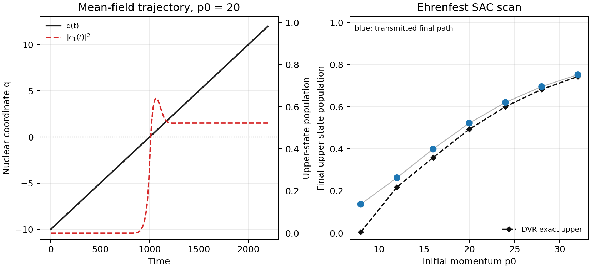

MQC Series - Part II
Ehrenfest Mean-Field Dynamics
Part I used FSSH to let an ensemble branch between adiabatic surfaces. Ehrenfest dynamics makes the opposite closure: the nuclei see one averaged force generated by the current electronic density matrix. This makes the method simple and smooth, but it also explains why it struggles once different electronic components should pull the nuclear wavepacket apart.
Mean-Field Force
The electronic coefficients are propagated with the same moving-basis equation used in FSSH,
The nuclear force is the expectation value of the electronic force operator along the current trajectory. For a real two-state adiabatic model, the form used in the benchmark is
The first two terms are the population-weighted average of adiabatic forces. The last term is the coherence force. If the electronic state is a coherent superposition near an avoided crossing, this term can matter as much as the population weights.
What This Buys
Ehrenfest has no random hops, no frustrated hops, and no velocity-rescaling ambiguity. It is deterministic once the initial condition is fixed, and it is often stable for short-time charge or exciton motion where a delocalized electronic state remains physically meaningful.
The price is the missing branch structure. If half of the electronic amplitude should travel on one surface and half on another, Ehrenfest keeps one set of nuclear coordinates and one momentum. The trajectory therefore feels an artificial mean surface after the physical wavepacket would have separated. This is the classic overcoherence problem.
Workflow
- Use the same Tully simple avoided crossing as Part I, with \(A=0.01\), \(B=1.6\), \(C=0.005\), \(D=1.0\), \(M=2000\), and \(\hbar=1\).
- Initialize the lower adiabatic state at \(x=-10\) and scan \(p_0=8,12,16,20,24,28,32\).
- Propagate the coupled variables \((q,p,c_0,c_1)\) with a fourth-order Runge-Kutta step of \(\Delta t=0.2\).
- Stop each trajectory after it leaves the interaction region at \(|x|\approx12\).
- Store a detailed time trace for \(p_0=20\) and a final-population scan over all momenta.
- Overlay the same finite sinc-DVR quantum reference used in Part I: a Gaussian packet centered at \(x_0=-10\), width \(\sigma=1\), propagated exactly after diagonalizing the two-channel grid Hamiltonian.
Result
The \(p_0=20\) trajectory crosses the coupling region at about \(t=1000\). The upper-state population rises sharply, overshoots, and then settles to 0.522 by the time the trajectory reaches the transmitted side. The DVR exact upper adiabatic probability for the corresponding Gaussian packet is 0.493. Across the momentum scan, Ehrenfest final upper population increases from 0.137 at \(p_0=8\) to 0.753 at \(p_0=32\), while the DVR curve rises from near zero to 0.744.
Compared with the FSSH article, the important difference is the meaning of the number. FSSH reports a fraction of trajectories whose active surface ends on the upper branch. Ehrenfest reports a continuous electronic population carried by one nuclear path. The agreement with the exact curve is reasonable for this simple transmitted wavepacket scan, but it should not be overread: in a system where the nuclear packet should split into well-separated branches, the same averaging becomes a physical limitation.

Code used in this note
- ehrenfest_tully_sac.py propagates the coupled mean-field equations, writes the final momentum scan, stores the \(p_0=20\) time trace, and renders the figure.
- dvr_tully_sac_reference.py builds and diagonalizes the finite sinc-DVR two-channel Hamiltonian used for the exact quantum reference.
- tully_common.py defines the Tully SAC potential, adiabatic energies, forces, derivative coupling, and shared electronic propagation helpers.
- ehrenfest-tully-sac.csv stores final coordinates, momenta, branch labels, populations, and mean energies for the momentum scan.
- ehrenfest-tully-sac-trace-p20.csv stores the time series used in the left panel.
- ehrenfest-tully-sac-summary.csv stores the compact \(p_0=20\) values quoted in the text.
- dvr-tully-sac-reference.csv stores the DVR transmitted/reflected lower/upper adiabatic probabilities.
References
- Crespo-Otero and Barbatti, Chem. Rev. 118, 7026 (2018).
- Nelson, White, Bjorgaard, Sifain, Zhang, Nebgen, Fernandez-Alberti, Mozyrsky, Roitberg, and Tretiak, Chem. Rev. 120, 2215 (2020).
- Tully, J. Chem. Phys. 93, 1061 (1990).